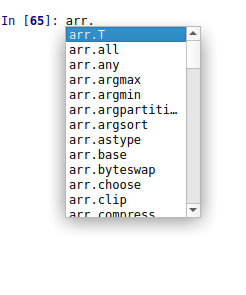
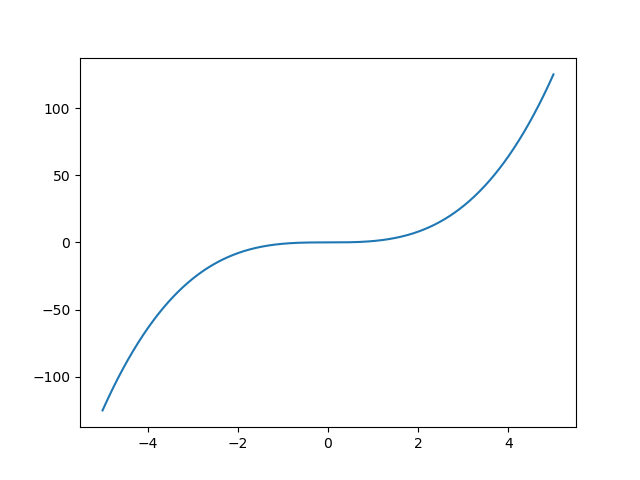

NumPy basics
NumPy is a Python module, developed to simplify scientific computations. It is part of SciPy stack, which provides wide variety of routines for linear algebra, Fourier tranformation, optimization, statistics, etc. It brings the power of mathematical software like MATLAB and beyond, combines it with flexibility and convinience of Python and is available under open-source license. These factors make SciPy a perfect choice for both educational and academic computations.
Module
Python allows code structuring by packaging the files into modules. Modules need to be installed prior to use. The most convinient way to do it is to use PIP, the Python package manager:
pip install <package_name>
E.g. to install NumPy
pip install numpy
In case Spyder is used, NumPy, SciPy should be already installed.
NumPy array
The data structure, which is in the heart of the whole SciPy ecosystem. It is an array of the data of same type. To create such array:
import numpy as np # load the NumPy module and give it alias np
arr = np.array([0, 1, 2, 3, 4])
print(arr)
[0 1 2 3 4]
Despite array looks same as Python list, it provides lots of useful methods. To see them, in IPython console type the name of array, add dot and press tab. The pop-up with the list of methods should occur:

Full list of methods is available in the official documentation
A few examples:
In [65]: arr.mean()
Out[65]: 2.0
In [66]: arr.sum()
Out[66]: 10
In [67]: arr.var()
Out[67]: 2.0
In [68]: arr.prod()
Out[68]: 0
One of the most widely used features is paralell computation, i.e. application of function to the array will lead to application of it to every element of an array. In the previous chapter it was shown how to calculate squares of the array:
for elem in lst1:
print(elem**2)
The same problem in NumPy could be solved in a very elegant way:
In [71]: np.power(arr, 2)
Out[71]: array([ 0, 1, 4, 9, 16])
(Here np.power is a function, which raises the input to the given power) Or even simplier:
In [72]: arr**2
Out[72]: array([ 0, 1, 4, 9, 16])
This is a typical way to plot a function in Python:
import numpy as np # load the NumPy module and give it alias np
import matplotlib.pyplot as plt # load pyplot submodule and give it alias plt
x = np.linspace(-5, 5, 1000) # create array of 1000 points, equally spaced in the range [-5, 5]
y = np.power(x, 3) # apply the function to the array to get y values
plt.plot(x, y) # plot x, y pairs
plt.show() # show the plot
This code will produce following image: 
NumPy arrays are not limited to 1D case. They could have arbitrary dimensionality, such as matrices:
A = np.array([[1, 0, 0],
[0, 1, 0],
[0, 0, 2]])
The size of matrix could be obtained with shape method:
In [9]: A.shape
Out[9]: (3, 3)
The linear algebra routines could be used for matrix multiplication:
A = np.array([[1, 0, 0],
[0, 1, 0],
[0, 0, 2]])
b = np.array([1, 1, 1])
print(np.dot(A, b)) # dot product A*b
[1 1 2]
inversion:
In [24]: np.linalg.inv(A)
Out[24]:
array([[1. , 0. , 0. ],
[0. , 1. , 0. ],
[0. , 0. , 0.5]])
Or to solve system of linear equations:
res = np.linalg.solve(A, b) # solve system of linear equations A*x = b
print("Solution:", res) # x
print("Verification:", A@res) # @ is a dot product operator
Solution: [1. 1. 0.5]
Verification: [1. 1. 1.]
NumPy array has unusually powerful indexing system:
A = np.array([[1, 2, 3],
[4, 5, 6],
[7, 8, 9]])
In[5]: A[0,1] # first row, second column
Out[5]: 2
In [6]: A[:,1] # all rows, second column
Out[6]: array([2, 5, 8])
In [7]: A[2,:] # third row, all columns
Out[7]: array([7, 8, 9])
In [8]: A[0:2,0:2] # rows from first to third, columns from first to third
Out[8]:
array([[1, 2],
[4, 5]])
In [11]: mask = [True, False, True] # create boolean mask
In [12]: A[mask,:] # take rows according to mask, all columns
Out[12]:
array([[1, 2, 3],
[7, 8, 9]])
Overall, it is difficult to say which functionality is important for chemist and which does not. In any case, reading documentation might be a good idea. Also, Python has a developed community, and almost any question can be answered by simple searching for it in the web.